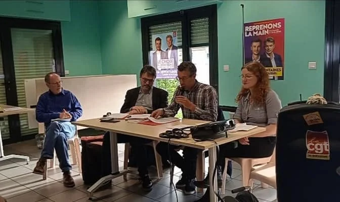
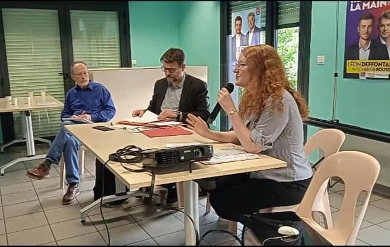

Compte rendu relayé
À Bressuire, agriculture, industrie et pouvoir d’achat au débat du 30 mai
Date de mise à jour indiquée par Facebook · 31 mai 2024
Repères éditoriaux
Élisabeth Jutel revient sur la réunion organisée à Bressuire avec Olivier Morin et Aymeric Seassau. Le partage du lendemain et les photos prolongent l’annonce de la réunion.
Texte de la publication · Élisabeth Jutel
#europeennes2024 #9juin
Campagne de la #GaucheUnie pour le monde du travail avec Léon Deffontaines
Super réunion publique à Bressuire, ce soir.
Merci les copains du PCF 79 - Parti Communiste Français fédération des Deux-Sèvres de Bressuire pour l'organisation !
Plaisir de rencontrer Olivier Morin (candidat, et secrétaire national du syndicat agricole le Modef) et Aymeric Seassau (maire adjoint de Nantes et responsable du secteur industrie au PCF), et d'avoir eu de très riches échanges avec la salle.
#agriculture #Industrie #pouvoirdachat
https://www.deffontaines2024.fr/


Sources
Élisabeth Jutel · publication relayée par le PCF 79 · bibliothèque Facebook · AR-0002-FB-01372
À lire aussi · Bressuire. Le débat du 30 mai sur l’agriculture, de la production à la consommation